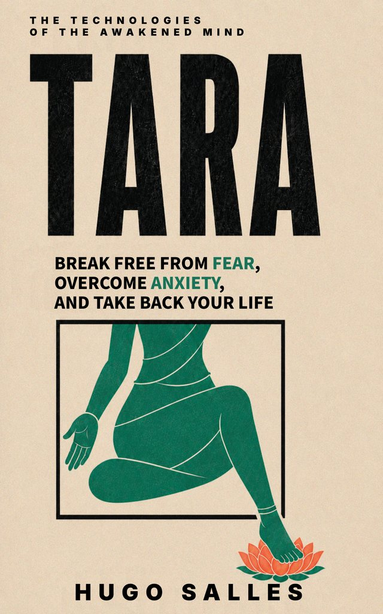

Tara
Tara
A prática viva para a vida real — o método tibetano para dissolver o medo e atravessar a ansiedade com coragem.
The living practice for real life — the Tibetan method for dissolving fear and crossing through anxiety with courage.
Existe uma diferença entre entender a ansiedade e saber o que fazer com ela no momento em que ela aparece. TARA trata a figura búdica como o que ela sempre foi na tradição tibetana: um método de ação diante do medo, não um símbolo para contemplar à distância. O livro traduz práticas de séculos de tradição contemplativa em passos que funcionam na vida real — no meio de uma crise de ansiedade, antes de uma decisão difícil, num momento de paralisia. Sem promessas de cura instantânea. Um método, testável e repetível, para atravessar o medo em vez de evitá-lo.
There is a difference between understanding anxiety and knowing what to do with it the moment it arises. TARA treats the Buddhist figure as what it has always been in the Tibetan tradition: a method of action in the face of fear, not a symbol to contemplate from afar. The book translates practices from centuries of contemplative tradition into steps that work in real life — in the middle of an anxiety crisis, before a difficult decision, in a moment of paralysis. No promises of instant healing. A testable, repeatable method for crossing through fear instead of avoiding it.
“Conta-se que, num tempo fora do tempo, o grande Bodhisattva da compaixão — Avalokiteshvara, aquele que ouve o clamor do mundo — olhou para o sofrimento dos seres. Não de longe, como quem observa um problema. Olhou de perto, um a um, e viu a extensão real da dor: o medo, a perda, a doença, a morte que volta sempre, o ciclo que não cessa. E viu que, por mais seres que ele libertasse, outros tantos continuavam a sofrer, sem fim. Diante disso, conta a tradição, ele chorou.
E de suas lágrimas formou-se um lago. Sobre o lago abriu-se um lótus. E do lótus, ao desabrochar, surgiu Tara — não como uma recompensa, não como um prêmio, mas como a própria resposta da compaixão à imensidão do sofrimento. Ela nasceu da lágrima de quem não suportou ver a dor e ficar parado.”
“The sentence said that, in the deepest practice, the practitioner doesn't pray to Tara. He becomes Tara. You don't ask, you generate. And this becoming was not a metaphor thrown into the air. It had a described mechanism, a predictable effect on the mind of the one who practices.
I read it three times. Because there I wasn't being asked to believe in anything. I was being handed a description of an operation, something to be done inside your own head, with a result you could verify in your own experience. Not 'believe and be saved.' But 'do it, and see for yourself.'”
"Uma leitura profunda para enfrentar o medo com mais consciência."